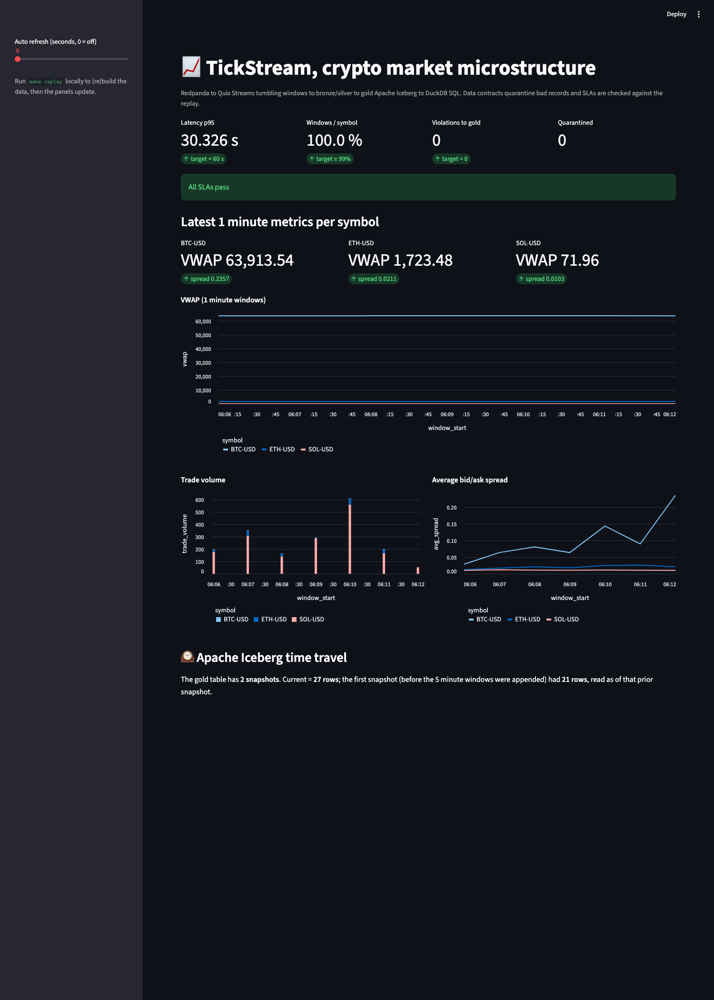

A real time streaming data platform for live crypto markets, built to run on a single laptop with one command, using only free public data.
by Linga Reddy Gudisha
TickStream is a small but complete data platform. It listens to a live feed of cryptocurrency trades, does the kind of real time number crunching that trading desks rely on, checks every record for quality problems, and saves clean, ready to query tables that feed a live dashboard. The whole thing runs with one command, uses only free public data, and needs no accounts and no secret keys. I built it to show that I can design and ship a production shaped data system from start to finish, not just a notebook.
Modern companies do not wait for data. Trading firms, ride sharing apps, banks watching for fraud, and streaming services all act on information the moment it arrives. The engineering behind that is called real time data processing, and it is one of the most in demand skills in data engineering today. TickStream is my hands on version of that whole stack, sized so it runs anywhere and anyone can watch it work in a couple of minutes.
One more piece I am proud of: I recorded a short slice of the real market into a file, so the entire system can be replayed offline with no internet and no keys. Anyone can reproduce my results exactly, and my automated tests run against that recording instead of a live connection, so they give the same answer every time.
Quality: bad records are quarantined before they ever reach the gold layer. Reproducible: a recorded sample lets the whole pipeline replay offline, with no network.
| Tool | What it does here |
|---|---|
| Redpanda | The streaming queue. It speaks the industry standard Kafka language but runs as one lightweight piece, so real streaming works on a laptop. |
| Quix Streams | The real time calculator. A Python library that processes data as it flows, which is what computes the rolling price and volume numbers. |
| Apache Iceberg | The smart table format for the gold layer. It gives history, time travel, and safe changes to the table over time. |
| dbt with DuckDB | The SQL engine and transformation tool. It turns the raw layers into clean tables using readable SQL, with no heavy infrastructure. |
| Pandera | The data contract. It defines what a valid record looks like and separates the good records from the bad ones. |
| Streamlit and Plotly | The dashboard. They turn the gold tables into live, interactive charts. |
| Docker, pytest, GitHub Actions | Packaging and testing. The whole stack starts with one command and is checked automatically on every change. |
Building TickStream meant making real engineering decisions and tying many moving parts into one reliable system. It shows I can work across the whole data engineering stack: live streaming, storage, SQL modeling, data quality, testing, packaging, and visualization. More than any single tool, it shows I can take a broad goal and deliver something that actually runs, that I can explain in plain language, and that someone else can pick up and reproduce in minutes.
Anyone with Docker can reproduce everything in this document, offline, in a couple of minutes. No accounts, no keys, no cloud.
make upstarts the streaming brokermake replaybuilds the whole pipeline from the recorded sample and checks the quality promisesmake dashboardopens the live dashboard in your browser
Linga Reddy Gudisha · Code and full write up: github.com/lithin45/tickstream-streaming-lakehouse · Thanks for reading.